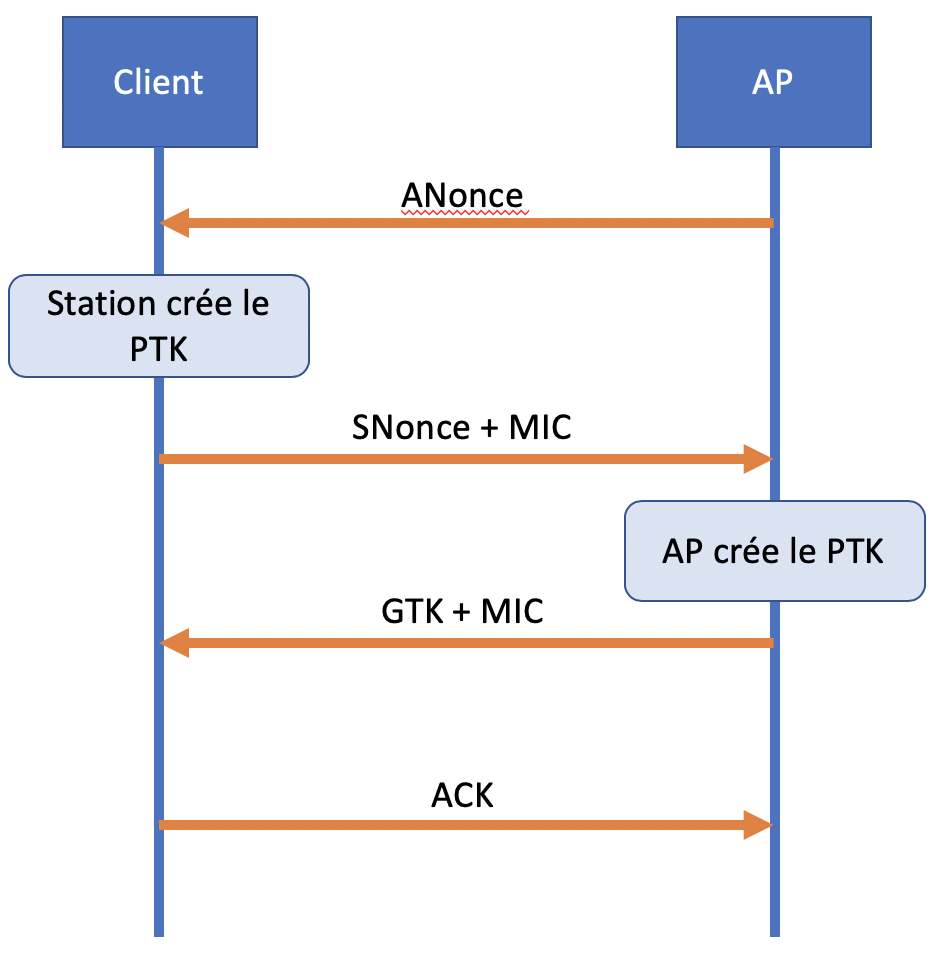
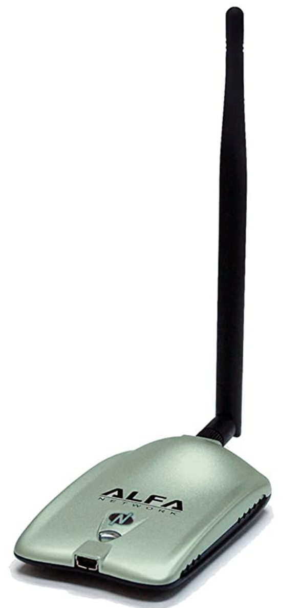
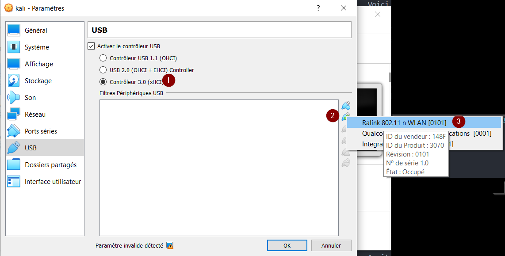

Pénétration de réseau sans-fils
Nature du réseau sans-fils
Le protocole 802.11 permet la communication entre appareils via les ondes radio. Les ondes radio voyagent librement dans l'air et peuvent être écoutées par n'importe quel appareil qui se trouve assez proche pour recevoir l'onde.
C'est pourquoi il a fallu avoir des protocoles de cryptage des paquets d'informations envoyées, pour éliminer l'écoute illicite.
Protocoles de sécurité
Il y a 3 protocoles de cryptage des communications sans-fils :
- WEP : Très insécure, utilise l'algorithme RC4
- WPA : Utilise TKIP et est basé sur WEP
- WPA2 : Utilise AES, jugé très sécuritaire, même aujourd'hui
WPA2 et l'échange en 4 étapes
WPA2 utilise un échange entre le point d'accès (access point ou AP) et le client en 4 étapes (4-way handshake). L'échange est pour prouver que AP et le client connaissent tous les deux la clé de cryptage, sans divulguer la clé. Les deux parties cryptent des messages pour l'autre avec la clé et lorsqu'ils décryptent le message de l'autre, ils ont la certitude que l'autre possède la clé.

- L'AP envoie une valeur nonce (ANonce) au client. Le client se sert du nonce pour construire sa clé.
- Le client envoie sa propre valeur nonce (SNonce) à l'AP et code d'intégrité de message (MIC - Message Integrity Code) qui inclus l'authentication.
- L'AP construit et envoi le GTK (Group Temporal Key) ainsi que son MIC.
- Le client envoi une confirmation à l'AP
Tout se passe en texte clair, il est donc possible d'écouter et de conserver dans un fichier PCAP pour faire un attaque par dictionnaire.
Équipement requis
Pour pouvoir utiliser les outils dans Kali pour une attaque du réseau sans-fils, il faut un appareil de connectivité WIFI qui supporte les deux modes suivants :
- Monitoring
- Injection de paquets (packet injection)
Ce ne sont pas toutes les cartes wifi qui supportent ces deux modes.
Voici le modèle utilisé dans ce cours :

Configurer l'appareil WIFI
Dans VirtualBox, changez les paramètres USB de la VM Kali.

1- Utiliser le contrôleur USB 3.0
2- Ajouter un filtre USB
3- Choisir Ralink
Aircrack-ng
Aircrack-ng est une suite d'outils pour écouter le réseau sans-fils, forcer la réauthentification et faire une attaque par dictionnaire.
Mettre sa carte en mode monitoring
Arrêter tous les processus qui utilisent la carte wifi :
airmon-ng check kill
Utiliser la commande airmon-ng pour démarrer le mode monitoring.
airmon-ng start wlan0
Le device s'appellera wlan0mon.
Écouter les ondes
Écouter les ondes pour trouver l'AP à pénétrer.
airodump-ng wlan0mon
Trouvez votre AP et copiez le BSSID. Notez aussi le canal (channel) utilisé par l'AP.
Écouter les communications de l'AP
Il faut maintenant écouter attentivement les communications entre les clients et l'AP ciblé.
airodump-ng --bssid AA:AA:AA:AA:AA:AA -c 11 --write prefixe wlan0mon
Le monitoring est démarré. Il faut maintenant attendre qu'il y ait une authentification par un client.
Forcer une authentification
Dans une autre fenêtre de terminal, nous allons forcer l'authentification d'un client.
aireplay-ng -0 0 -a AA:AA:AA:AA:AA:AA wlan0mon
Ça force tous les clients à s'authentifier.
Une fois que vous voyez la mention "WPA Handshake" dans airodump-ng, vous pouvez arrêter les deux outils.
Attaque par dictionnaire
Il faut maintenant attaquer le handshake avec une liste de mots de passe. Une liste disponible sur Internet de plus de 64 millions de mots de passe se trouve ici :
Notez qu'utiliser cette liste peut prendre plus de 24 heures pour cracker le mot de passe du Wifi.
Pour démarrer l'attaque par dictionnaire :
aircrack-ng prefixe-01.cap -w mots_de_passe
Une fois l'outil terminé, nous avons la clé!
Important
Prenez quelques minutes pour faire votre cartographie de la leçon d'aujourd'hui!